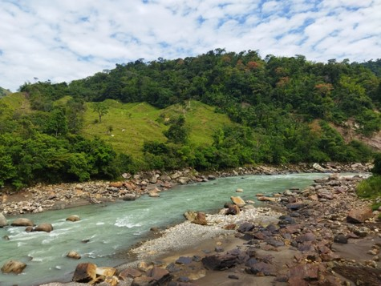
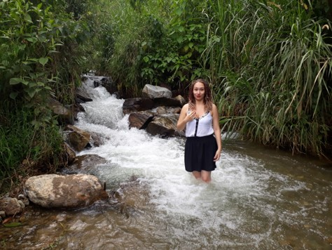
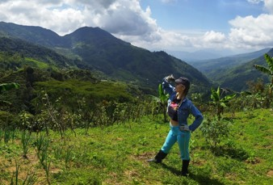
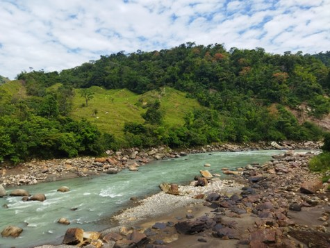
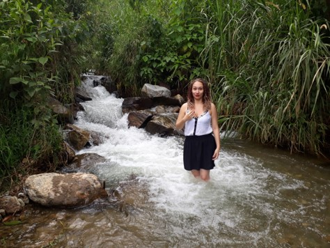
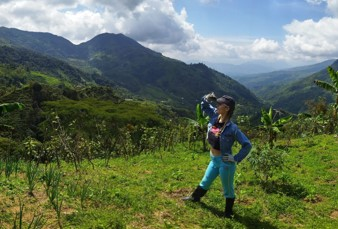

Soy Luisa Castaño, ingeniera biomédica y teatrera de corazón, buscadora e incansable estudiante de la vida. Soy signo Cáncer, por lo que el sentimiento me acompaña en cada paso. Amo el helado, el chocolate y los días lluviosos, detesto el calor, los ruidos fuertes y la injusticia.
Bienvenid@s a un poco de mi vida

 




